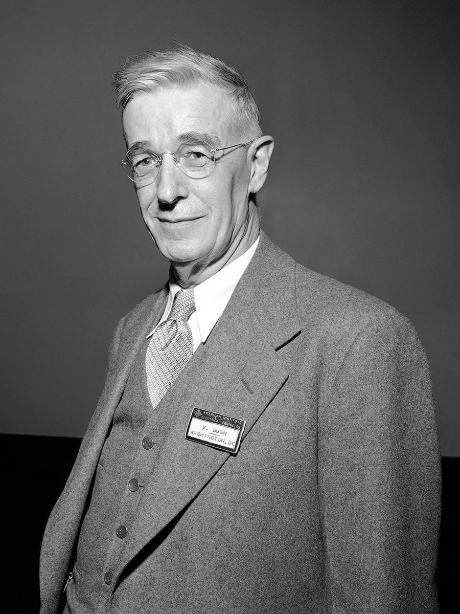
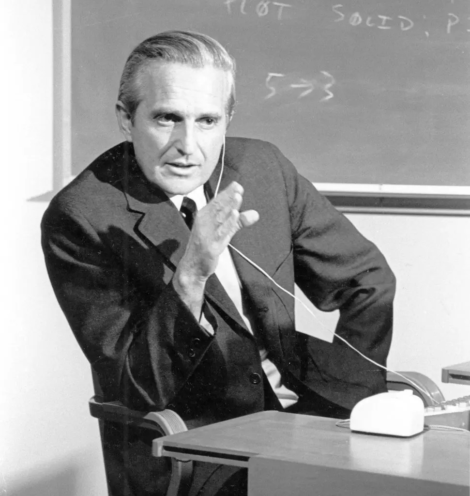
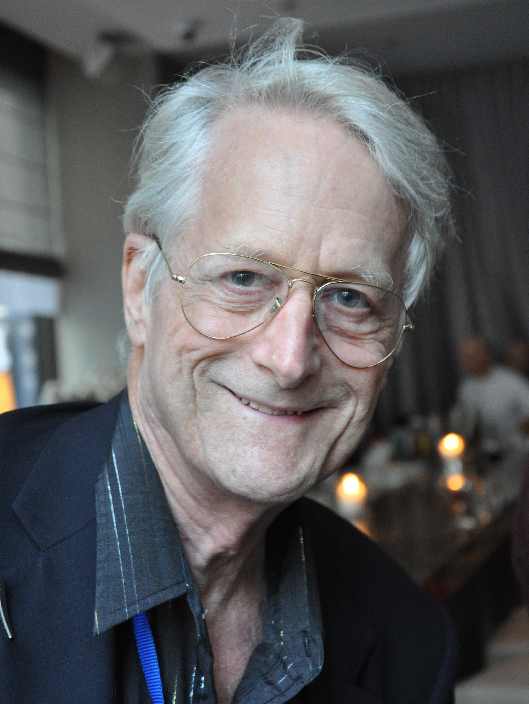
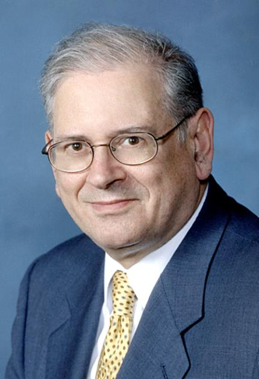

Vannevar Bush (1890 – 1974) was an American mathematician, electrical engineer, scientist, and administrator, one of the great overachievers of the 20th century [1], [2]. Bush was born in Everett, Massachusetts, USA, on March 11, 1890 [3]. He was the third child and only son in the family. When he was a toddler, the family moved to Chelsea, Massachusetts, where he completed his primary, secondary, and high school educations. He earned bachelor's and master's degrees in mathematics from Tufts College, and a doctorate degree in electrical engineering from the Massachusetts Institute of Technology (MIT) [2]. During the 1920s and 30s, Bush and his research laboratory at the Electrical Engineering Department at MIT became the designers and builders of analog computers. It subsequently led to the invention of the Differential analyzer, a pioneering mechanical computing device that solved differential equations through analog methods which significantly advanced the fields of science and engineering. [2], [4]. He is widely remembered as a vast contributor to the field of computer science with an article “As We May Think” and the proposition of the “Memex” device [2], [5]. In the article, published in July 1945 by the Atlantic Monthly, Bush proposed a theoretical machine called “Memex” – a microfiche-like system where users could navigate and retrieve information, and leave “trails”. For Bush, this article was only an extension of his work in analog computing, but it was actually a precursor to hypertext and the World Wide Web, to modern computing and the Internet [2], [4].

Douglas (Doug) Engelbart (1925 – 2013) was an American inventor, a pioneer in many aspects of computer science [6], [7]. Engelbart was born in Portland, Oregon, USA, on January 30, 1925 [7]. His ancestors were of German, Swedish and Norwegian descent. He was the middle child of the family, with an older sister and a younger brother. The family lived in Portland, but moved to the surrounding countryside when he was 8. A year later, he lost his father at only 9 years old. He completed his education in Portland after which he earned bachelor’s, master’s, and doctorate degrees in electrical engineering at Oregon State University and the University of California [6]. Engelbart was a great contributor to the field of computer science, a visionary, and the inventor of key technologies that allowed interactive computing. After accepting a position at the Stanford Research Institute, and after they founded Engelbart’s own research laboratory, the Augmentation Research Center, he worked on and perfected various works of his. His most memorable and impactful inventions include the computer mouse (1963), Graphical User Interface (GUI), multiple-author-capable hypermedia system, multiple-window display, and shared screen teleconferencing [6], [5]. Engelbart wanted computers to be a way of connecting with others in a network that would allow them to share and update information in real time [6]. His inventions significantly improved the usage of computers, the interactivity, the inputting, manipulating, and displaying data. His work made it possible for ordinary people to use computers.

Theodor (Ted) Nelson (1937 – Present) is an American philosopher, sociologist, and a visionary figure in the history of computer science best known for his work in hypertext and hypermedia [8], [9]. Nelson was born in Chicago, Illinois, USA, on June 17, 1937 [8]. He is the son of the award-winning director Ralph Nelson and the award-winning actress Celeste Holm. He was raised in Chicago and later in Greenwich Village mostly by his grandparents, as his parents’ marriage was brief. As a child, he was diagnosed with attention-deficit/hyperactivity disorder (ADHD) [9]. He earned a bachelor’s degree in philosophy from Swarthmore College, a master’s degree in sociology from Harvard, and much later in his life, a doctorate degree in media and governance from Keio University [8], [9]. While studying at Harvard, Nelson took a computer course for the humanities [9], [10]. He was struck by the visions of what could be, he was able to see the computer’s endless possibilities for human connection and self-expression. In 1960, he proposed “Project Xanadu”, a method of storing and linking document fragments together [5]. Xanadu was designed as a global hypertext system to create a universal and interconnected network of documents that anyone could access and edit. The original 17 rules of Xanadu are similar to the client/server architecture of the web. Although Xanadu was never materialized, it was ahead of its time and influenced future developments of the Web. Nelson is credited with coining the terms “Hypertext” and “Hypermedia” in 1965 [5].
Steven (Steve) Jobs (2955 – 2011) was an American inventor and businessman best known as the co-founder of the company Apple, Inc., the founder of the company NeXT, and the chairman of Pixar [11], [12]. Jobs was born in San Francisco, California, USA, on February 24, 1995. He was raised by adoptive parents in Silicon Valley, California [12]. He attended Reed College in Portland, Oregon, but dropped out after the first semester and took a job as a video game designer. In 1974, Jobs reconnected with a former high school friend Stephen (Steve) Wozniak, an electrical engineer and computer programmer. The two decided to go into business together which eventually led to the founding of Apple. They worked in Jobs’ family garage with money they obtained by selling Jobs’ Volkswagen and Wozniak’s programmable calculator. In 1976, they created Apple I. – one of the first personal computers! Wozniak then later designed an improved model – Apple II., the first pre-assembled computer! The machine was an immediate success and in 1981, the company – Apple Computer. Inc. – had a record-setting public stock offering and made the quickest entrance into the list of America’s top companies! In 1984, the Macintosh was introduced, more commonly known as the Mac [12], [4]. But, in 1985, due to Jobs’ intense personality and perfectionism, Apple’s CEO, who Jobs had hired, kicked Jobs out of Apple. Jobs then founded NeXT Inc., a company that designed powerful workstation computers for the education market. He also started working at Pixar, a computer graphics company, a small subdivision of Lucasfilm Ltd. Under Jobs’ leadership the following decade, Pixar turned into a major animation studio that made Jobs a billionaire. In 1996, Apple was struggling financially and technologically, therefore Apple purchased NeXT and Jobs returned to Apple, becoming its CEO a year later. His return was a game changer for Apple, as the innovations that followed Jobs’ return made Apple one of the best technology companies in the world – iMac (1998), iPad (2001), iPhone (2007), iPad (2010). Unfortunately, in 2003, Jobs was diagnosed with a rare form of pancreatic cancer which eventually led to his death on October 5, 2011 [12], [4].
Timothy (Tim) Berners-Lee (1969 – Present) is a British computer scientist best known as the inventor of the World Wide Web and its additionals. Berners-Lee was born in London, England on June 8, 1955 [13]. His parents were mathematicians and computer scientists and he is the oldest of four children in the family. Berners-Lee was raised and finished his pre-university education in London. He earned a bachelor's degree in physics from Queen's College in Oxford [14]. Following graduation, Berners-Lee worked and had several positions in the computer industry. While working at CERN, the international particle-research laboratory in Switzerland, he developed a program for himself that could store information in documents that contained links within them, leading to other documents with other information [14], [15]. He then later, in 1989, proposed this program for creating a global interlinked documents system. Berners-Lee’s proposition of this global system, the “web of information”, relied on Hypertext Markup Language (HTML) and hyperlinks. He proposed HTML as a way of structuring text files intended for display on a Web page within a Web browser. This was a markup language, a set of codes or symbols that would change the appearance and modify the text file into a structured document. And the hyperlinks would be a way of connecting those documents, they would be able to point to any other HTML page or file. He proposed a new way of structuring and linking all the information available on a computer network which would make it quick and easy to access [15]. Following the invention of HTML and hyperlinks, in 1990 Berners-Lee developed the Hypertext Transfer Protocol (HTTP), an application-layer protocol that governs communication between web browsers and web servers, and designed the Universal Resource Identifier (URI), a string of characters used to uniquely identify a resource on the web server [15], [5]. Essentially, Berners-Lee created a system of hypertext documents and resources, formatted using HTML and accessed over the internet using the HTTP protocol - this system is the World Wide Web (WWW). The World Wide Web became available to the public in late 1991 and its popularity took off in 1993 with the release of the Mosaic web browser [5]. In 1994, Berners-Lee established the World Wide Web (W3) Consortium in the USA at the MIT (Massachusetts Institute of Technology) Laboratory for Computer Science [14]. The W3 Consortium was setting and publishing the standards for the HTML language – versions of updated HTML rules - until 2019 when they relinquished the HTML standard publishing to the Web Hypertext Application Technology Working Group (WHATWG) [5]. They then later created the HTML Living standard - a continually evolving standard without version numbers that replaces HTML’s latest version – HTML 5. Berners-Lee is currently a professorial researcher at the University of Oxford and a professor at the Massachusetts Institute of Technology (MIT) [13].
Marc Andreessen (1971 – Present) is an American software engineer and businessman. Andreessen, alongside his colleague, American software programmer Eric Bina (1964 – Present), played a key role in creating the Mosaic web browser – one of the first widely successful GUI web browsers. Andreessen was born in Cedar Falls, Iowa, USA, on July 9, 1971, and was raised in New Lisbon, Wisconsin, USA [16], [17]. He earned a bachelor's degree in computer science from the University of Illinois [17]. While enrolling at the University, he got a part-time job at the school's computer lab, the National Center for Supercomputing Applications (NCSA). There, he and a few of his peers, including Eric Bina, created Mosaic. Mosaic was a user-friendly browser application that integrated graphics and a point-and-click function, making it easier to navigate the Web for the ordinary, nontechnical person. Mosaic was a huge success that reached more than two million downloads within only one year! A year before the release of Mosaic, Andreessen dropped out of college, ending his journey to earn a master's degree. But, Mosaic's vast success was a turning point for Andreessen to completely shift his focus on technology and business [4], [17]. In 1994, he left NCSA and co-founded the Netscape Navigator, a „monster“ software which became the most popular browser almost overnight [17], [5]. He continued to co-found many successful companies to this day.
Robert (Rob) Harthill (1969 – Present) is a British computer programmer and a web designer, one of the early pioneers of the World Wide Web [18], [19]. He played a key role in the initial growth of the World Wide Web, as he was involved in its software infrastructure and content development. Hartill was born in Pontypridd, Wales, on January 30, 1969 [18]. He earned his bachelor's, master's, and doctorate degrees at the University of Wales [19]. Alongside his contribution to the WWW, he is best known for his work on the Internet Movie Database (IMDb) website and the Apache web server [18]. In 1993, as the result of being an active participant in the rec.arts.movies. database, he produced a web interface to this database - Internet Movie Database (IMDb) – which was bought by Amazon.com later in 1998 [19]. In 1994, he co-founded the Apache Software Foundation and made numerous important contributions to the Apache web server.
Louis J. Montulli II (simply Lou Montulli) (1968 – Present) is an American computer programmer [20]. He is best known for his contributions to producing web browsers. While studying for his bachelor's degree at University of Kansas, he co-authored the Command-line Interface (CLI) web browser Lynx - the oldest browser in use and it is currently the most popular text-only browser! In 1994, Montulli was part of the team at Netscape Communications Corporation and programmed the networking code for the first versions of the Netscape web browser [20], [4]. Among his other inventions such as: server push and client pull, HTTP proxying, and encouraging the implementation of animated GIFs into the browser, his most memorable one is HTTP Cookies. In 1994, while working at Netscape, he created Cookies, also known as web cookies or browser cookies. They are a small piece of data which a server sends to the client. The browser can store cookies, create new ones, modify existing ones, and send them back to the same server. Cookies enable web applications to store limited amounts of data and remember state information because the HTTP protocol is stateless by default [21].
Vinton (Vint) Cerf (1943 – Present) is an American computer scientist, an Internet pioneer who is considered one of „the fathers of the Internet“ [22], [23]. Along with Bob Kahn, he first proposed, designed, and implemented the Internet's basic communication protocols - the Transmission Control Protocol (TCP) and the Internet Protocol (IP). Cerf was born in New Haven, Connecticut, USA, on June 23, 1943 [22]. He earned a bachelor’s degree in mathematics from Stanford University, and master’s and doctorate degrees from the University of California at Los Angeles (UCLA) [23]. During his studies at UCLA, he worked on a project to write the communication protocol for ARPAnet. While working on the protocol, he met Bob Kahn, who approached him expressing his will to assist in developing and designing this new protocol. Together, along with contributing colleagues, they created the TCP/IP protocols. In 2004, the two were awarded the A.M Turing Award, the greatest honor in computer science, for their work on TCP/IP protocols and inspiring leadership in networking. In 1982, he became the vice president at MCI Communication Corporation and led the engineering and deployment of MCO mail, the first commercial email service to be connected to the Internet. In 1992, he and Khan, alongside others, founded the Internet Society (ISOC), an international nonprofit organization that provided education to the public about the Internet. Throughout his life, he has won numerous awards, proving his extraordinary skills and knowledge. Since 2005, Cerf has worked at Google as the Chief Internet Evangelist.

Robert (Bob) Bahn ( 1938 – Present) is an American electrical engineer, one of the principal architects of the Internet, who is considered one of „the fathers of the Internet“, alongside Cerf [24], [25]. Along with Vint Cerf, he first proposed, designed, and implemented the Internet's basic communication protocols - the Transmission Control Protocol (TCP) and the Internet Protocol (IP). Kahn was born on December 23, 1983, in Brooklyn, New York, USA [25]. He earned a bachelor's degree in engeneering from City College of New York, and master's and doctorate degrees in electrical engineering from Princeton University. In 1968, Kahn joined Bolt Beranek & Newman (BB&N), an engineering consulting. There, he was a part of the group that designed the network’s Interface Message Processor, and helped organize the first International Conference on Computer Communication. After meeting Together, along with contributing colleagues, they created the TCP/IP protocols. In 2004, the two were awarded the A.M Turing Award, the greatest honor in computer science, for their work on TCP/IP protocols and inspiring leadership in networking. In 1972, Khan joined the Information Processing Techniques Office (IPTO) where he later became the program manager and which led to his interest of approaching and assisting Vint Cerf assist in developing and designing a communication protocol for ARPAnet. Together, along with contributing colleagues, they created the TCP/IP protocols. In 2004, the two were awarded the A.M Turing Award, the greatest honor in computer science, for their work on TCP/IP protocols and inspiring leadership in networking [25].